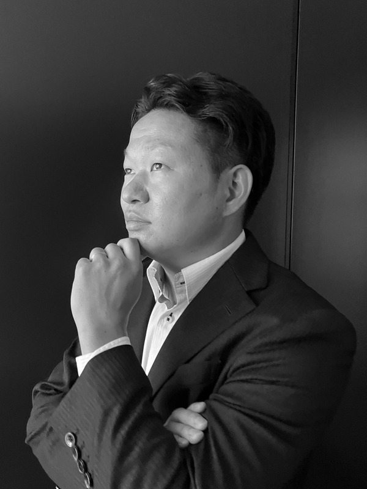
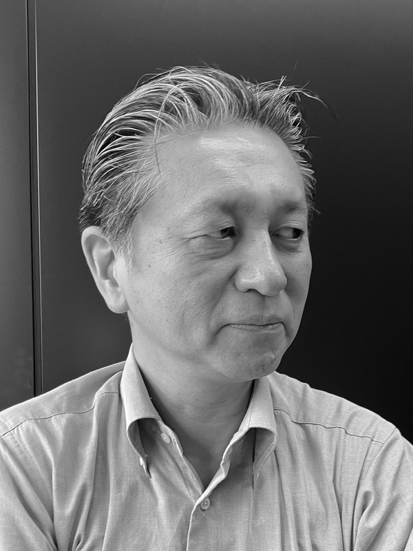
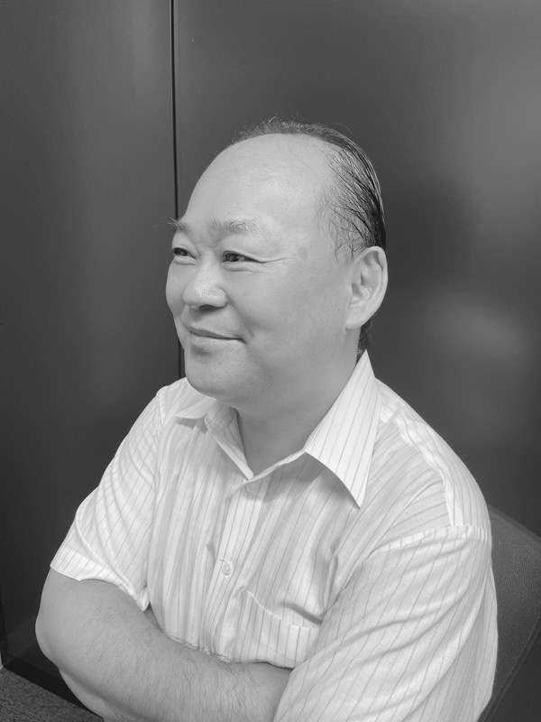
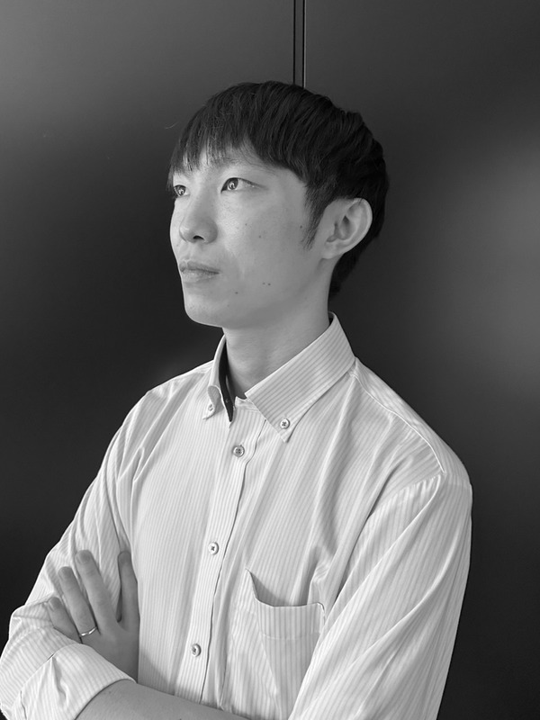
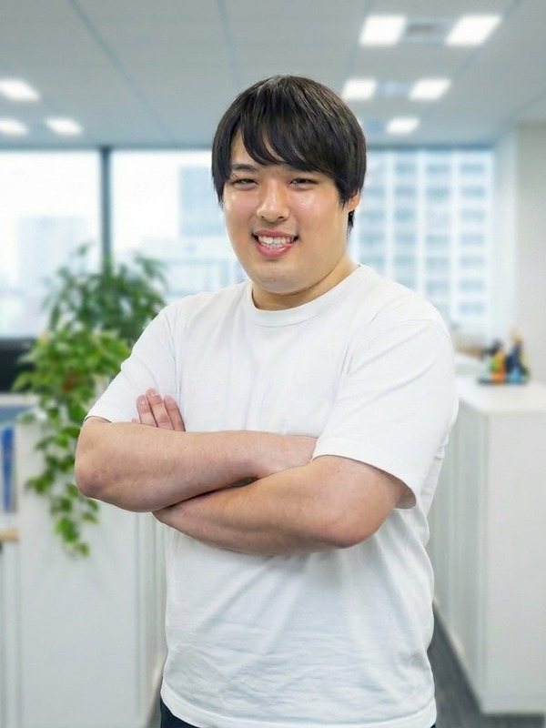

事業部長
灰田 琢磨
防衛大学卒業。航空自衛官として約11年間、国防の最前線に従事。米国をはじめとする諸外国との共同訓練を通じ、日本のテクノロジーの遅れを痛感。
戦力を発揮する時代から、宇宙・サイバー・電磁波によって相手を無力化する時代への変化を現場で体感。国防への貢献手段を自衛官からテクノロジーへ転換。
ネイバーズ株式会社では事業部を2年で70名規模へ拡大し、経営・採用・要員養成・営業を統括。
還元率90%という数字は、運営体制が透明でなければただの宣伝文句になります。
VALORISEを誰がどのように運営しているかを公開します。
会社概要は運営会社の会社情報ページの記載に基づいています。
日本では企業の売上が拡大する一方で賃金への還元が進まず、年収が伸び悩んだまま物価だけが上がり続けています。この構造はエンジニア個人の努力では動かせません。取り分の配分を決めているのは会社の側だからです。
VALORISEは、単価の9割を人件費としてエンジニアへ還元するという配分を先に固定しました。会社の取り分は残り1割で、ここから採用・案件開拓・バックオフィスの費用をまかないます。会社が身軽であることを前提に設計された仕組みです。
そのうえで、高還元に見合った責任と能力を兼ね備えたエンジニアだけを迎え入れています。還元率と採用基準は、切り離せない一組の条件です。
数字を出せない会社は、数字で語らない。
私たちは単価を開示します。
技術・事業・AI・マーケティング、各分野のプロフェッショナルが揃っています。
このメンバーだから、9割還元が実現できます。

防衛大学卒業。航空自衛官として約11年間、国防の最前線に従事。米国をはじめとする諸外国との共同訓練を通じ、日本のテクノロジーの遅れを痛感。
戦力を発揮する時代から、宇宙・サイバー・電磁波によって相手を無力化する時代への変化を現場で体感。国防への貢献手段を自衛官からテクノロジーへ転換。
ネイバーズ株式会社では事業部を2年で70名規模へ拡大し、経営・採用・要員養成・営業を統括。

大手電機メーカーグループ企業にて技術者、プロジェクトマネージャー、技術統括責任者を歴任。オープンシステムやインフラから、クラウド、モダンアーキテクチャ、生成AIを活用した先進的な開発まで、企画・構想から設計、開発、導入、運用に至るプロジェクト全工程を経験。
その後、当社の最高技術責任者（CTO）として、プロジェクト全般の技術・品質における最終責任を担うとともに、技術戦略、開発組織の強化、エンジニアの育成・要員養成を統括。
30年以上にわたり培った技術力、プロジェクトマネジメント力、事業推進力を基盤に、技術戦略の策定から組織・人材の育成まで、当社の技術領域を幅広く牽引している。

IT/OTコンサルタントとして11年にわたり、製造・物流領域のDXを推進。工場DX、IoT、ロボット自動化、AGV/AMR導入、AI開発受託など、現場課題の抽出からDX構想、技術提案、システム・設備導入、事業化まで幅広く手掛ける。
ロボット自動化・IoTをはじめとする新規事業を立ち上げ、事業化まで実現。17年にわたるマネジメント経験を基盤に、プロジェクトエグゼクティブとして、DX請負事業における重要プロジェクトの戦略立案、顧客との合意形成、プロジェクト推進、技術・開発部門との統合的なマネジメントを担う。
ITとOT、経営と現場、技術と事業を横断してプロジェクトを統括し、DX構想を実装・事業成果へと結びつけるプロジェクト推進の中核を担っている。

茨城大学大学院修了。プロダクト開発事業会社にてソフトウェア開発に従事した後、当社へ入社。
現在はAIプロダクト開発責任者として、生成AI・AI技術を活用した社内業務基盤および社外向けAIサービスの企画・設計・開発を統括。業務プロセスを構造化・分解し、AIが担う領域と人が担うべき領域を再定義することで、従来の業務モデルそのものを変革。AIによる自動化・高度化と人材の専門性を組み合わせ、少人数で高い生産性と品質を実現する業務モデルを構築している。
また、社外向けサービスにおいては、顧客ごとの業務課題や潜在ニーズを的確に捉え、AIを単なる業務効率化ツールとしてではなく、事業成長を支えるプロダクトへ落とし込むオーダーメイド開発を強みとする。
AI技術と業務設計、プロダクト開発を横断し、「AIを導入する」だけに留まらず、AIを前提とした新たな業務・事業モデルの設計から実装までを一気通貫で担っている。

宮崎大学卒業。事業会社にてSNSマーケティング責任者を務め、運用体制の構築から効果測定、改善までを統括した後、当社へ入社。
現在はDX・マーケティング統括責任者として、社内業務のデジタル変革と対外マーケティングを統括。見積り、設計、レビュー、ドキュメント作成などの各工程に生成AIを組み込み、効果を定量的に検証しながら業務プロセスそのものを再設計している。
人員を増やすのではなく、一人あたりの生産性と対応領域を最大化する組織づくりを推進。AIを単なる効率化ツールではなく、事業成長を支える経営基盤として活用している。
まずはカジュアル面談から。
現在の年収や案件の進め方について、気軽にご相談ください。